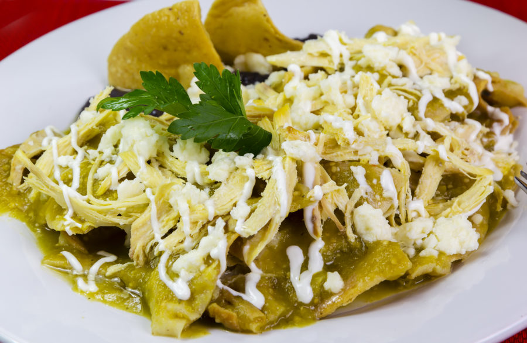
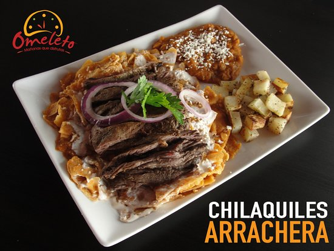
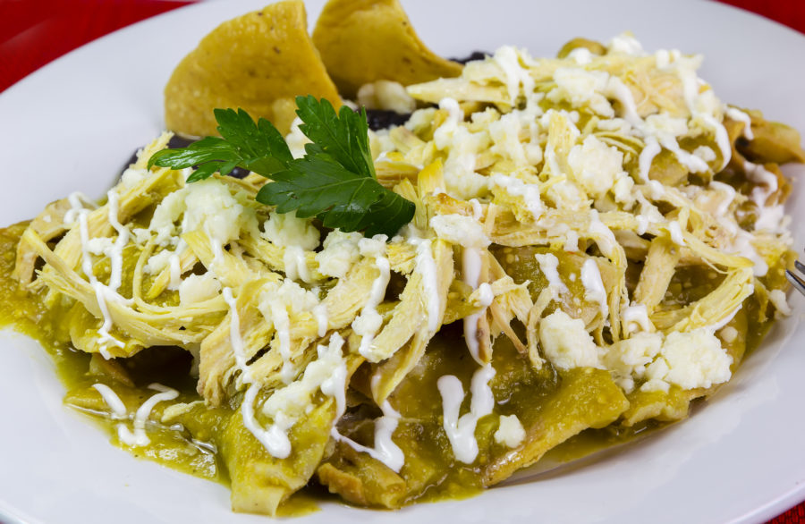
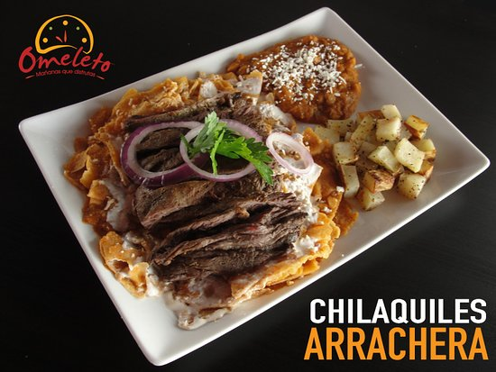
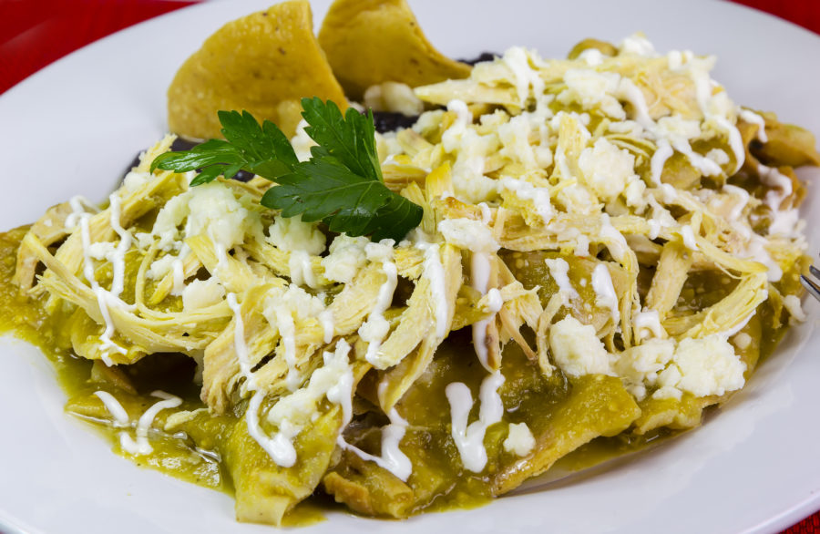
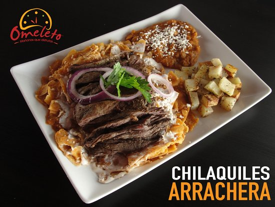

Por ultimo le mostramos un pequeño video de nuestra receta, toca la ultima imagen


Por ultimo le mostramos un pequeño video de nuestra receta, toca la ultima imagen
| chilaquiles verdes: | |||||||||||||
| $55
| chilaquiles con bistec: |
| $88
| chilaquiles con pollo: |
| | $88
| chilaquiles con Arrachera: |
| $95
| |
Mostramos algunas imagenes de nuestros platillos:)


Por ultimo le mostramos un pequeño video de nuestra receta, toca la ultima imagen